class: center, middle # Materials Informatics --- # Class goals - Give a survey of materials science, and machine learning - Provide **intuition** to help understand advanced concepts --- # Agenda 1. Introductions 2. Materials science 3. Informatics and machine learning --- # Class format - Lots of **interactive discussion and questions** - Ask questions at any time (but please raise your hand) --- # Introduction - A little about me - About the class (Who is from Boston area? Massachusetts State? USA? Beyond USA?) --- class: center, middle # Materials Science --- # What is Materials Science? Some examples... 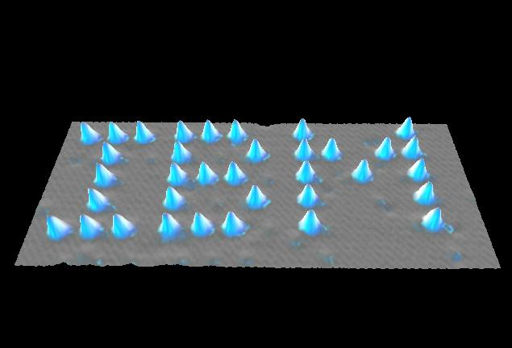 --- # What is Materials Science? Some examples... 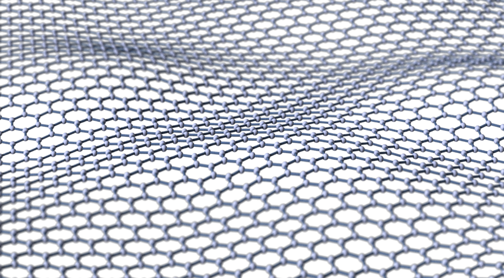 --- # What is Materials Science? Some examples... 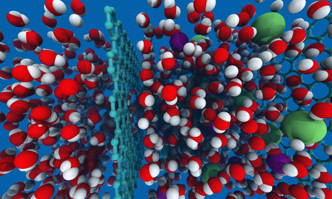 --- # What is Materials Science? Some examples... --- # What is Materials Science? Some examples... 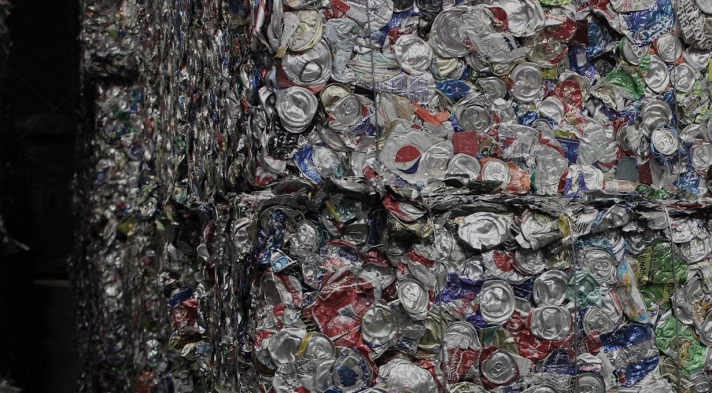 --- # What is Materials Science? Some examples... 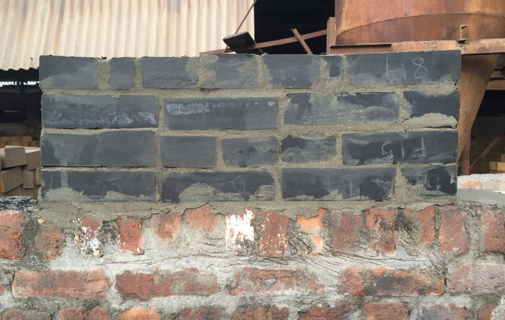 --- # What is Materials Science? 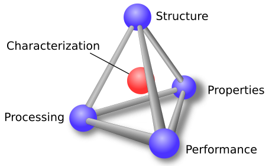 --- class: center, middle # Structures and Properties of Materials --- # Crystal structures - What is a crystal? Can anyone give examples? 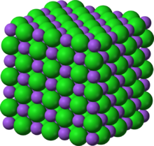 ??? [Show picture of crystal lattice and/or unit cell] [Useful because it lets us DESCRIBE MATERIALS] --- # Which ones are crystals? - See if you can convince your neighbor. 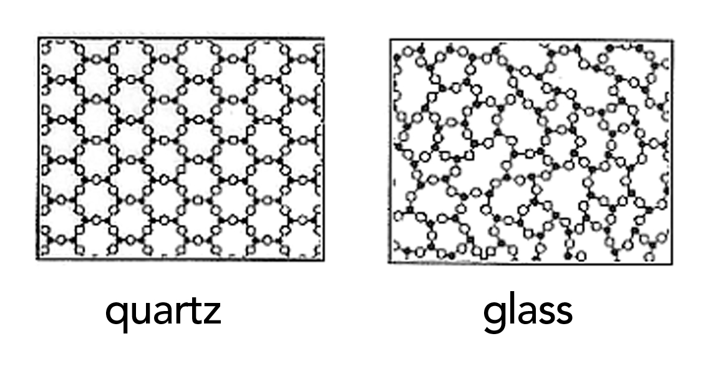 ??? [ Show a few images, macro/micro/atomic scale ] --- # Atomic scale structure 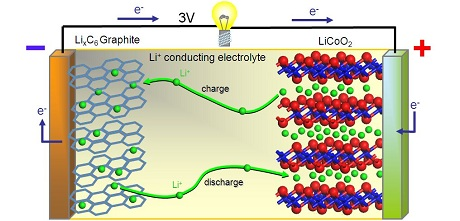 --- # Material properties We often are interested in what **properties** materials have... - What **properties** do you think this material has? --- # Recap of materials science --- class: center, middle # Informatics and Machine Learning --- # Informatics - what is it? - Let's contrast with 'first principles' reasoning: Which is heavier? A block of iron or a block of wood (of same sizes)? Why? 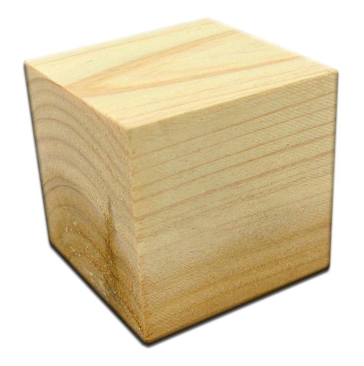 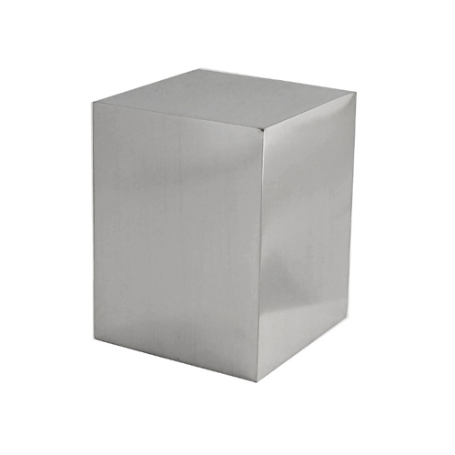 --- # Data-first isn't always so silly - If I throw a ball in an arc, how do I figure out where it lands? 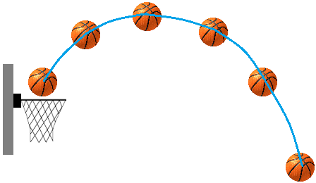 --- # Data-first isn't always so silly - If I throw a ball in an arc, how do I figure out where it lands? 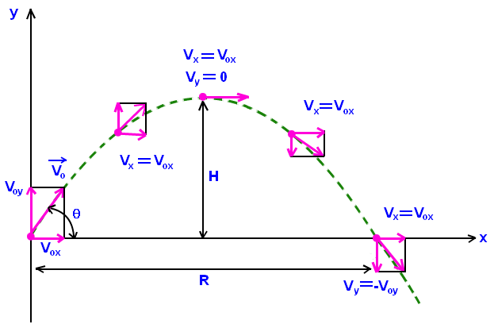 --- # First principles VS data-driven - The goal is (often) **prediction** in both cases - First principles is used when a **theory** is able to predict the results - Data-driven methods are used when we must guess a model from **past experience** (or past data) 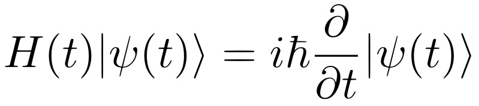 --- # Finding patterns in the data <br> ## 2, 4, 8, 16, 32, ?? <br> ## 1, 1, 2, 3, 5, 8, 13, ?? --- # We want to find **models** from our data - What does the line tell you? 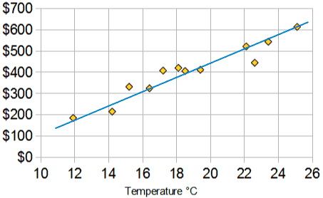 ??? [Show diagram of 'best fit lines' and other easy examples] [Qualitatively explain the idea of error and fit, prediction and generalization] --- #DISCUSSION: But models aren't always so easy to find... <img src="img/fitting.png" width="600"> --- # "Machine learning" and "artificial intelligence" - Hot topics these days: but what are these fields about? - Lots of things, but one major theme is learning **models from the data** ## Kinds of machine learning 1. Unsupervised 2. Supervised 3. Semi-supervised --- # Unsupervised learning 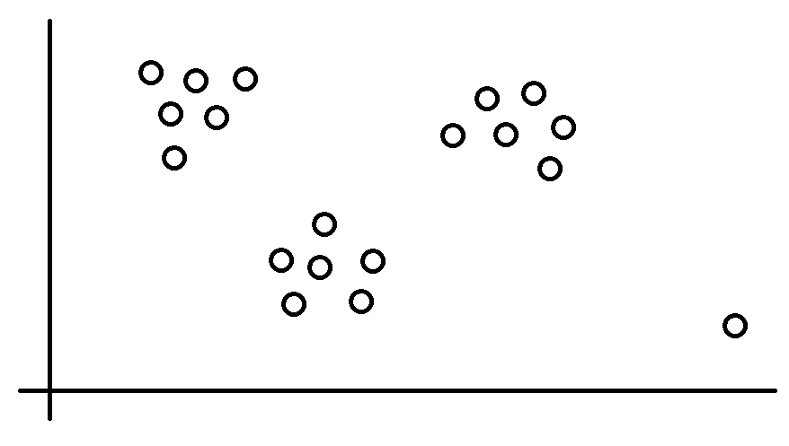 --- # Supervised learning 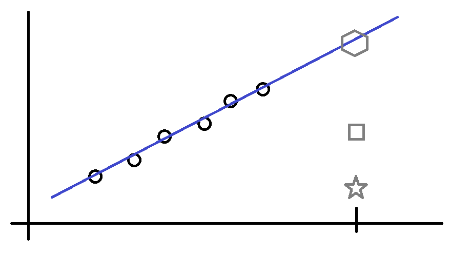 --- # Semi-supervised learning 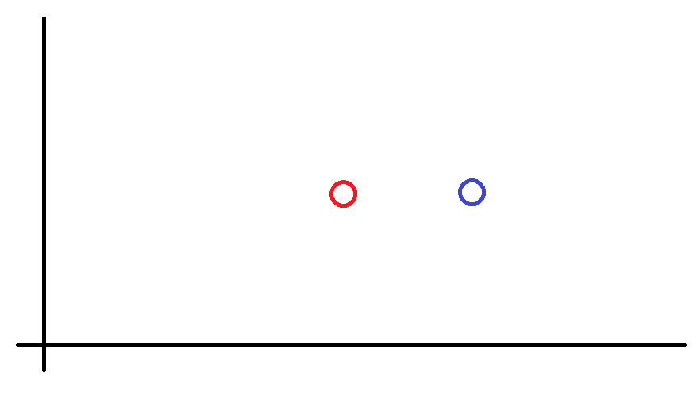 --- # Semi-supervised learning 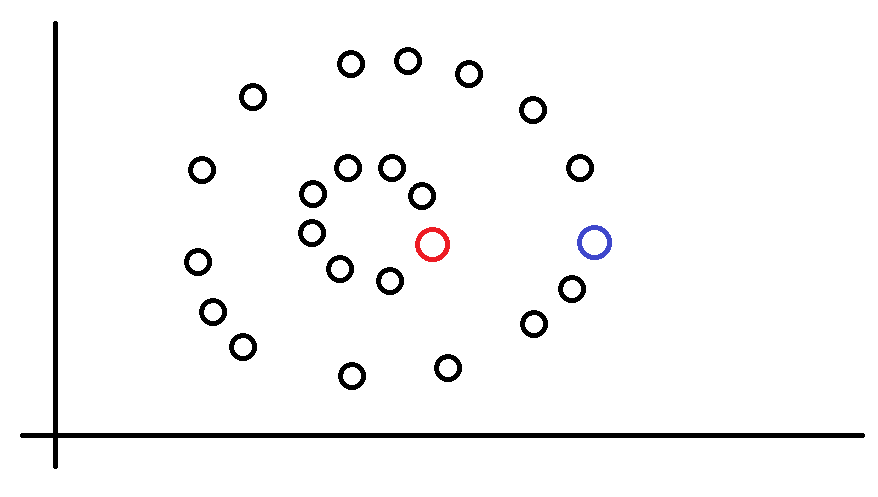 --- # A cool machine learning example <iframe width="560" height="315" src="https://www.youtube.com/embed/qv6UVOQ0F44" frameborder="0" allowfullscreen></iframe> --- # A materials informatics research example 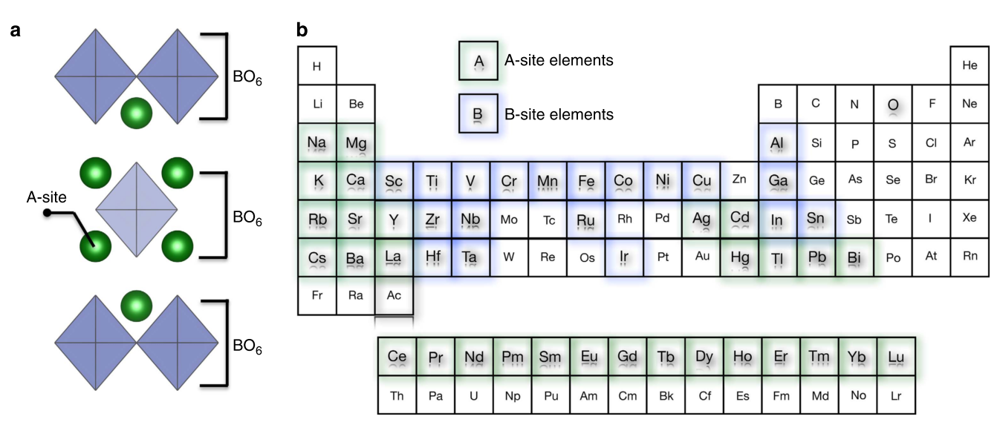 - (Source: 10.1038/ncomms14282) --- # A materials informatics research example 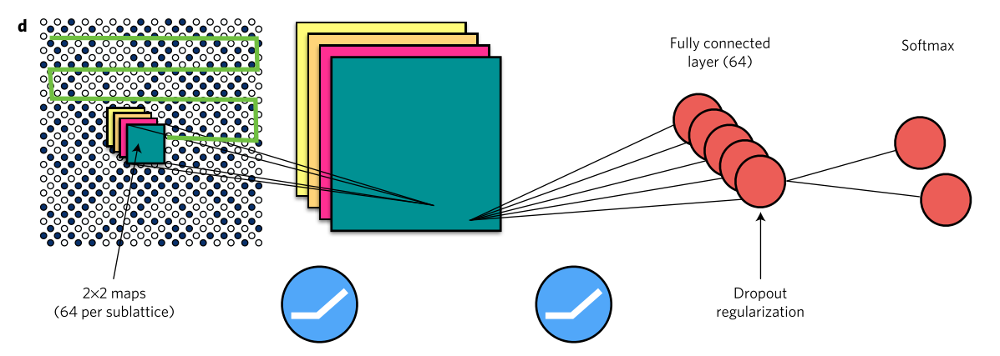 - (Source: 10.1038/nphys4035) --- # A materials informatics research example 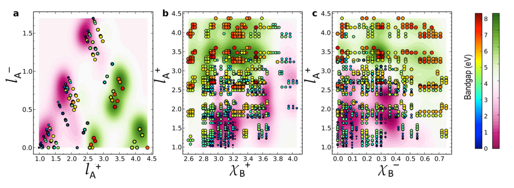 - (Source: 10.1038/srep19375) --- # What we learned today - Materials science: studying "stuff" by understanding atoms, nano/microstructures, properties, etc. - Materials informatics: studying materials using data (usually machine learning techniques) --- # Thanks for listening! Any last questions? - You can get access the slides at these links if you ever want to revisit the lecture material: (Raw content) https://github.com/eddotman/intro-to-materials-informatics *** (Online slide viewer) http://htmlpreview.github.io/?https://raw.githubusercontent.com/eddotman/intro-to-materials-informatics/master/slides-gr78-version.html </menu>